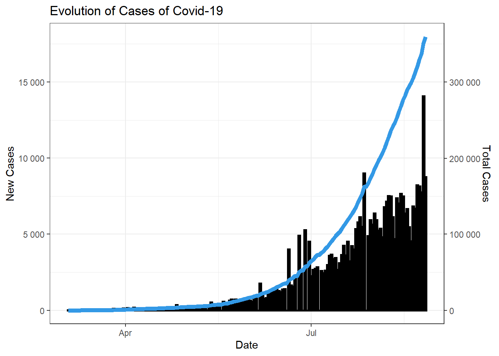
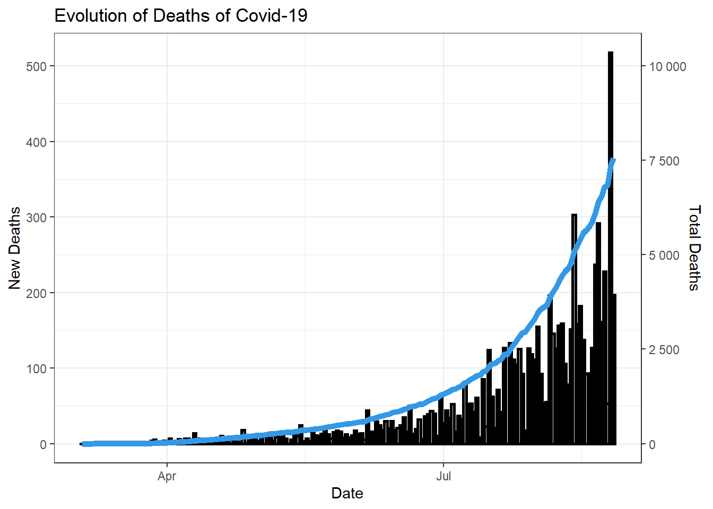

Analysis of Covid-19 Data in Argentina
Alan Gewerc
9/17/2020

Image Source: Getty Images
In the last post, we have analysed the current situation in Bolivia with regards to the damage caused by COVID-19. To do so, we used different formats of tables that allowed one to track the evolution of cases, deaths and much more.
In the current post, we will keep exploring South-America, but now we will examine Argentina. The country is the second economy in the region, and the third larger population. With respect to COVID-19, more than 350.000 cases have been observed locally, and more than 7.000 people have lost their lifes.
We will use different tools to build visualisations that allow one to understand the current situation of the country with respect to the evolution of the pandemic in the region during the year. Additionally, we will also explore the visually eventual differences of the spread of the virus according to geographical regions of the country.
The Dataset
As in the previous post, We are working with a dataset sourced from the website Our World in Data. The website is from the organization with the same name, based on Oxford University.
We have downloaded the owid-covid-data.csv file, which has COVID information about more than 190 countries across the world. Since our analysis will focus exclusively on Argentina, we have filtered out all other countries from the table.
The dataset is a multivariate time-series that comprises multiple features from the period of the 31th of December, 2019 to the 26th of August of 2020. It has 40 columns with 36 features of every country. Some directly related to the Covid-19 such as the total number of deaths, total number of deaths per million habitats number of tests per day and positive rate of tests. Other data are social and economic variables that are indirectly related to covid-19 spread such as the median age of the population, GDP per capita, percentage of smokers and much more.
Visualisation 1 - Evolution of COVID-19 in Argentina
In the following visualisations, we can observe the evolution of the number of cases and deaths of COVID-19 in Argentina across the year of 2020. The first recorded case in Argentina was in the 03-Apr-2020, after most countries in the world.
In the following plots, for variables can be observed: 1. The number of new cases of Covid-19 in Argentina each day 2. The number of new deaths of Covid-19 in Argentina each day 3. The accumulated number of cases of Covid-19 in Argentina each day 3. The accumulated number of deaths of Covid-19 in Argentina each day
In the each plots there are two y-axis. The reason behind it is that there is a relevant difference in magnitude between the presented variables in each plot.
In the plot on the left one can see the number of total cases of covid-19 x new cases in Argentina. In the plot on the right one can see the number of total deaths of covid-19 x new deaths. Acummulated variables are represented as lines while the bars represent new numbers.

Some notes about an attentive observation of the table are the following:
* The number of cases and deaths follow extremely similar patterns, as expected.
* The pandemic has not gone through the pic yet in Argentina. The country is still experimenting a growth trend.
* Observing rough numbers, the mortality rate in Argentina is about 2%. There have been ~ 7.5 thousand deaths and 300 thousand cases.
Table 2 - Analysis of Cases per Region
In our next step, we will make a regional analysis of Covid-19 in Argentina. To do so, we will make use of an plot called Choropleth Map. This thematic map allows us to observe patterns in proportion to a statistical variable that represents an aggregate summary of a geographic characteristic within an area. It can be used to analyse per-capita income, median age of population, and in our case, number of cases of Covid-19. To build this plot we make use of multiple libraries such as maptools, rgdal, raster, rgeos and ggplot.
Argentina is subdivided into twenty-three provinces and one autonomous city (Buenos Aires city), which is the federal capital of the nation. The largest province by far, is Buenos Aires, which has a population of ~ 17.2 million people, in a country of ~ 44 million (38% of total). The second largest state by population is the province of Cordoba, that has 3.6 million people. Given the proportion of the province of Buenos Aires, not only as the most populated province, but also as the major economic center of the country, we expect higher numbers of Covid-19 in Buenos Aires than in any state.

As we can see, in absolute numbers Buenos Aires has by far the largest numbers of Covid-19. To improve our analysis we will now analyse by percentage. In this way we will now the penetration of the virus in each location according to the total population.

We observe from the second plot that Buenos Aires is the province most severely affected by Covid-19, but the proportion is not so different from the rest of the country.